Garrett Crochet is the guy you want your money on early. The Red Sox lefty has a 2.06 ERA, a 1.02 WHIP, and 135 strikeouts in 109 innings. He's dominating hitters with pace, confidence, and command, especially at Fenway. He's allowed two runs or fewer in 9 of his last 10 starts and gives Boston a real edge in the early frames.
Yes, the price is -215, but it's justified. This is a short sample window. We only need Boston to be leading after five innings — not win the game, not cover a spread — just lead. And with Crochet on the hill and the offense facing Reds rookie Chase Burns, who has struggled with command and hasn't been tested in a place like Fenway, this is a high-confidence early spot.
Don't let the number scare you off. You pay juice for reliability. We're backing a top five first-five arm in baseball against a rookie in a tough park.
A's vs Rays Over Under Pick for June 29, 2025
Posted: 10:05 PM – June 29, 2025
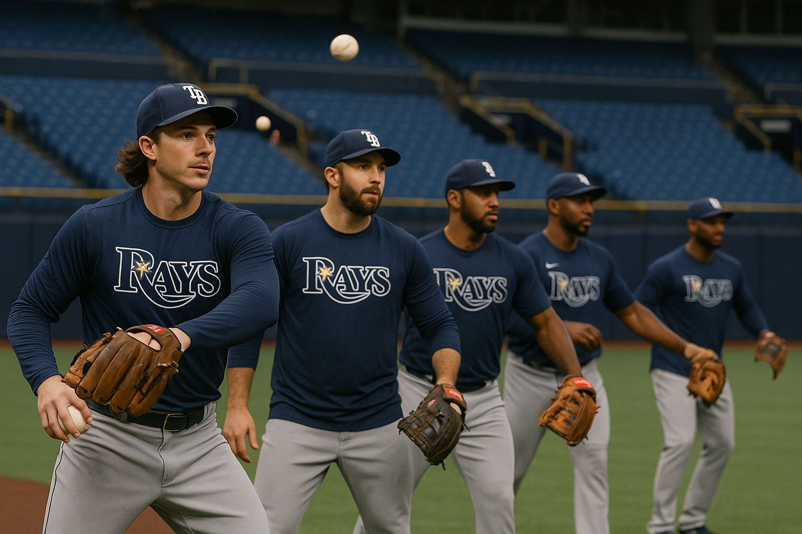
We're targeting the first five innings under 4.5 at -145 in tonight's A's and Rays matchup, and this one makes a lot of sense. Both teams have been slower starters this season. Tampa Bay is averaging under three runs in the first five, and they've actually been better at holding opponents down early than scoring themselves.
Oakland hasn't exactly been an offensive force this year, and their road bats are even colder. The A's are among the bottom five in first five runs scored, especially on the road. They've also stayed under this number in six of their last eight games.
Tampa Bay is using Jacob Lopez today, who has looked sharp through the early innings in each of his last few starts. On the other side, the A's are running with an opener approach, leaning on the bullpen for the front end, which is a low-scoring setup more often than not.
When both lineups are trending under and the pitching setup favors soft contact, this kind of play becomes all about discipline. And that's what this bet is. You're banking on low output, slow tempo, and nobody cracking a big inning early. These two teams don't exactly explode early in games.
Given how both starters have been dealing and how underwhelming both lineups have been in the early frames, this under 4.5 for the first five innings looks like a smart spot to attack.
• Brewers vs Rockies Pick 6/29: First 5 Innings Prediction
Posted: 12:22 AM – June 29, 2025
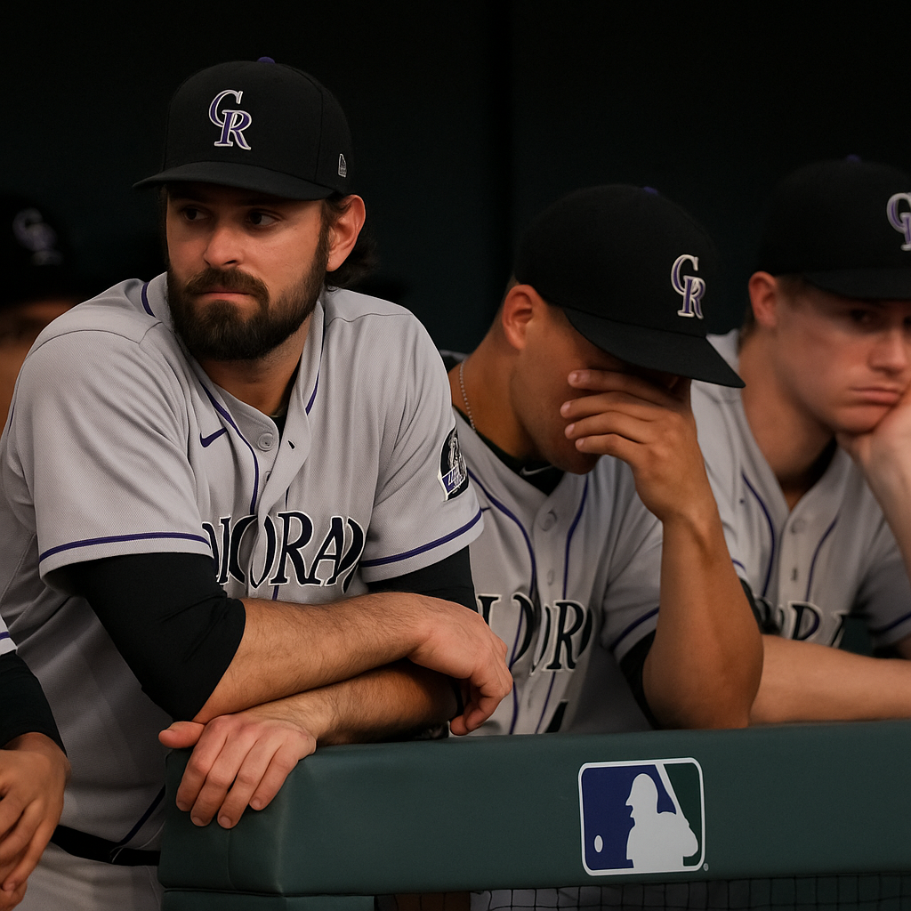
This is a spot that checks every box. Colorado is ice-cold on the road, and it's been that way all season. They're bottom of the league in almost every offensive split when away from Coors, and now they have to deal with one of Milwaukee's top arms in a ballpark that rewards pitching.
The Brewers, meanwhile, come into this game on a nice home rhythm and have consistently jumped ahead early in games against weak rotations like Colorado's. We're not asking them to blow the game open—we just need a lead after five.
Based on the matchup, park factors, and how these two teams trend in the first half, this line actually feels like value even at the current number.
Final pick: Brewers First 5 Innings -0.5 (-154)
• Phillies vs Braves Pick 6/29: First 5 Innings Under Bet
Posted: 12.05 am – June 29, 2025
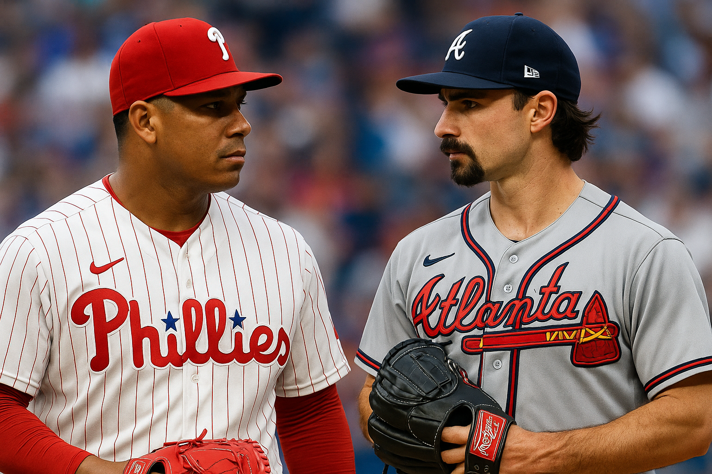
Not many matchups in baseball feature two pitchers with as much young fire and command presence as Spencer Strider and Ranger Suarez. Both guys have been absolute warriors on the mound this season, and when they go head to head, it's usually a low-scoring duel. Their styles are different but equally effective. Strider overpowers hitters with elite velocity and whiffs, while Suarez uses pinpoint location and off-speed deception to get weak contact and induce ground balls.
Suarez enters this game with a 1.83 ERA and a 0.89 WHIP over 14 starts, including a ridiculous 0.86 ERA at home. He's walked just 19 hitters all year while holding opponents to a .186 batting average. Strider, meanwhile, has looked better every time out since coming off the IL. Over his last 3 starts, he's allowed just 3 total runs in 17 innings, striking out 23 and issuing only 3 walks. The Braves have been carefully managing his pitch count, which could help him cruise through the early innings again here.
As for the bats, the Phillies have cooled down a bit since their early-season tear, especially in the first five innings. Atlanta's offense has also taken a slight dip in production lately against left-handers, and Suarez is the kind of guy who gives them fits with his changeup-heavy attack. Both teams rank top 5 in bullpen ERA, but this one shouldn't even get there before cashing.
With a total of 4.5 juiced to -160, oddsmakers are clearly showing respect to both pitchers. And they should. These are two of the most competitive, heart-throwing arms in baseball right now. Look for a tight, quiet first five.
Final pick: Phillies and Braves First 5 Innings Under 4.5 -160
• Blue Jays vs Red Sox Prediction 6/29: First 5 Innings Bet
Posted: 7:02 p.m. – June 28, 2025
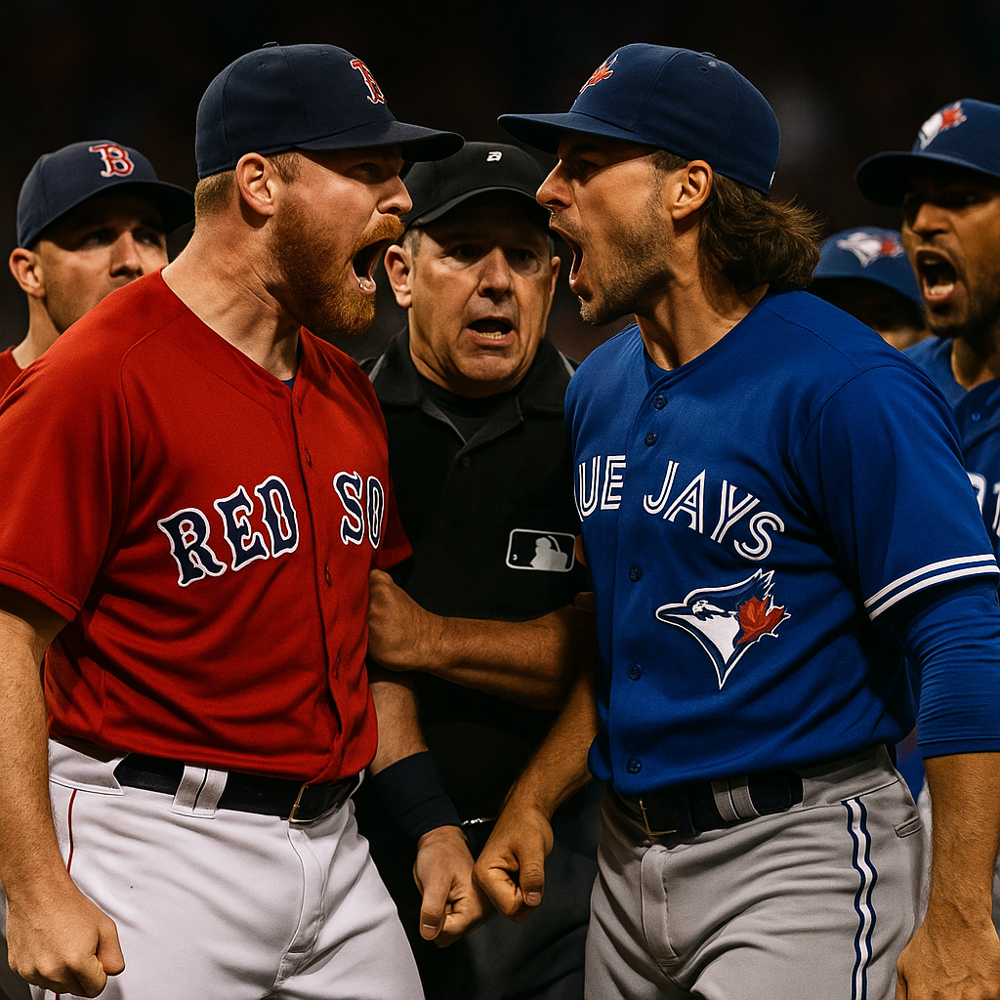
We're heading to Fenway for a good old-fashioned East showdown and backing the Blue Jays early. Toronto comes into this game with Eric Lauer on the mound, and while he's not stretched out to go deep, his four to five inning stints have been quietly efficient. Lauer has allowed just 10 earned runs over his last 40 innings, and Toronto seems to be using him in a perfect role, letting him avoid third-time-through-the-order trouble.
On the flip side, Boston hands the ball to Walker Buehler, who just hasn't been the same. His ERA is sitting over six, his WHIP is north of 1.5, and he's had issues with walks and leaving pitches up. He's been giving up runs in bunches early in games, and against a Toronto lineup that doesn't need much to get hot, that's not ideal.
The Blue Jays have also had some recent success putting runs on the board early. Their first five innings scoring average over the last ten games has crept into the top five league-wide, while Boston's offense has slowed, especially the first time through the order.
Fenway can be a tricky park, but Lauer's been handling contact well and has kept the ball in the yard. The Jays defense behind him has looked sharp, and if Toronto plates even a run or two early, we're in a great position to cash.
This is one of those value spots where the number may not look pretty, but we're backing the more stable arm and the team with early momentum. The pick is Toronto first five innings, plus half a run, laying -154.
• Astros vs Cubs Pick 6/28: First 5 Innings Prediction
Posted: 3:35 p.m. – June 28, 2025
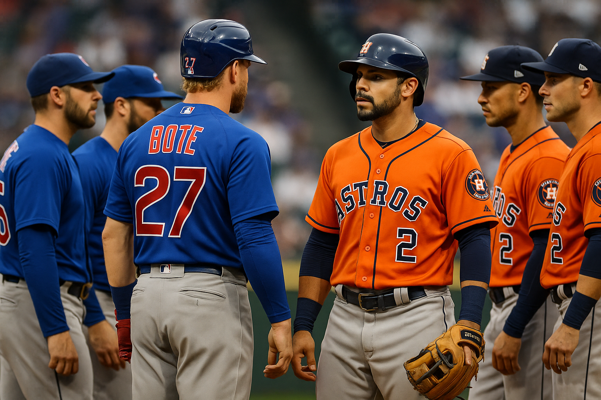
The Astros got out to a lightning start last night, jumping all over Cade Horton with a pair of early bombs from Cam Smith and Yainer Diaz. The game was basically over by the fourth inning. Houston cruised to a 7 to 4 win behind Brandon Walter and a fired up home crowd. They've now won four of their last five games, and they've scored first in each of them.
Today we get a different look with Lance McCullers Jr. on the mound for Houston. His season's been rocky coming off elbow surgery, but he's still got strikeout stuff. Through five starts, he's punched out 39 batters in just 29.1 innings. His last outing on June 22 wasn't clean, but he limited damage early. More importantly, the Astros bullpen has looked strong behind him lately.
Colin Rea goes for the Cubs, and he's been a bit of a dice roll all year. His 4.42 ERA and 1.39 WHIP don't inspire confidence, and he's allowed multiple runs in the first three innings in three of his last four road starts. He's not walking many guys, but the contact quality has been high. The Astros should have a good look at him second time through the order.
The Astros are 25 and 14 to the first five innings line at home this year. They're coming in hot after that opening barrage last night, and with Rea's tendency to give up hard contact, this is a spot where the Houston bats can stay aggressive. Expect them to try and jump on Rea again early, especially with McCullers looking to settle in on home turf.
Final pick is Astros First 5 Innings at -115. This one sets up nicely for Houston to keep applying pressure and grab the early lead again.
• White Sox vs Giants Pick 6/28: Team Total Under Bet
Posted: 2:21 a.m. – June 28, 2025
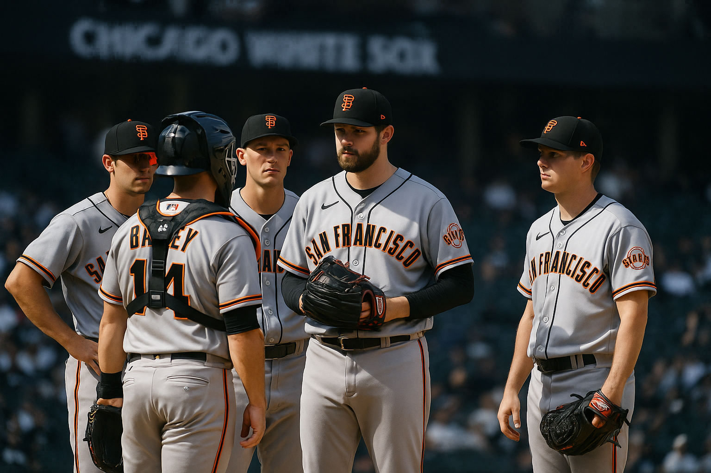
The Giants kicked off their road trip in Chicago and delivered a clean 3–1 win behind a composed outing from Landen Roupp. The rookie right-hander limited the damage and showed poise under pressure, stranding six runners and getting two huge outs with the bases loaded in the fourth. His command wasn't perfect, but his stuff played in the zone and the White Sox simply couldn't capitalize.
The Chicago offense continues to struggle. Over the last 20 games, they're averaging just 3.2 runs per game and rank near the bottom of the league in OPS. Even with a couple of base runners early, they couldn't string anything together. The lone run came off an error. They finished the game with just five hits and struck out eight times.
San Francisco's bullpen did exactly what it's been doing all season, locking it down. Their relievers combined for 3.2 shutout innings, with only one baserunner allowed. Camilo Doval picked up his 13th save and continues to be one of the most effective closers in baseball.
The Giants' team ERA is now sitting just above 3.40, and on the road they've been even stingier, holding opponents to under 3.5 runs in 11 of their last 15 away games. This is a group that travels well and executes the game plan without making mistakes.
Betting the White Sox team total under 3.5 at -135 made sense here and still does going forward until this offense shows some life. The lineup lacks power and patience, and it shows when they get behind in counts or fall into late-inning holes.
The official pick for June 28 is Chicago White Sox team total under 3.5 at -135.
• Yankees vs A's Prediction 6/28: Team Total Under Pick
Posted: 10:14 p.m. – June 28, 2025
The Oakland A's have not exactly been lighting up the scoreboard lately. Over their last ten games, they've averaged just 3.4 runs per game, and in five of those, they were held to three runs or fewer. That's not an encouraging trend heading into Yankee Stadium, especially against a right-hander who's been quietly rock solid.
Clark Schmidt has flown under the radar this season, but he's starting to put up numbers that deserve attention. Since the start of June, he has a 2.95 ERA with a 1.09 WHIP across four starts. His strikeout rate is up and he's holding opposing batters to a .227 average. He's done a good job managing pitch counts and limiting traffic, which has helped him avoid the kind of big innings that inflate scoring totals.
Oakland has struggled all year long against right-handed pitching. Their team OPS vs righties ranks 26th in baseball, and that's backed up by a high strikeout rate and low on-base percentage. They're not walking much, and they've hit only 38 home runs in 71 games against righties this year. That kind of profile sets up well for Schmidt, who mixes his cutter and slider to generate weak contact and avoid barrels.
The Yankees bullpen has been a huge asset behind their starters. They enter this matchup with the second-lowest bullpen ERA in the American League over the last 30 days. They've been especially stingy late in games, with a sub 2.90 ERA in the seventh inning or later. That matters when you're betting a team total under, since even one soft inning late can blow it.
Between Schmidt's steady work, the Yankees bullpen, and the A's recent struggles at the plate, this number feels a little inflated. Four and a half is a generous line for an offense that hasn't cleared that number in four of their last five games and is facing a pitcher who's been in a rhythm.
The pick for June 28 is Oakland A's team total under 4.5 at -210.
• Angels vs Nationals Pick 6/27: First 5 Innings Bet
Posted: 1:04 AM – June 27, 2025
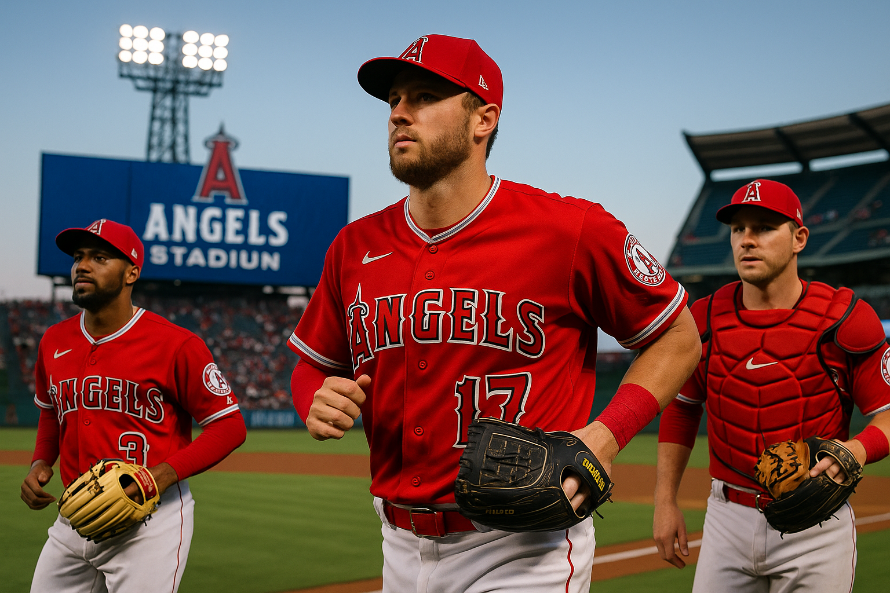
Don't look now, but the LA Angels are actually playing some good baseball. Quietly, they've been putting together a solid little stretch, and tonight they're in a really favorable spot against a Washington team that's been struggling pretty consistently over the last couple weeks.
Jake Irvin takes the ball for the Nationals and that has not gone well early in games this season. His ERA in the first five innings is over 5.00, and opponents are hitting .288 against him the first time through the order. In his last three starts, he's given up a combined 11 earned runs in the first five frames. He's also walked at least two batters in each of those starts, which is not what you want when facing a team that's been seeing the ball well.
On the flip side, José Soriano has been dealing. Over his last three outings, he's allowed just three total earned runs across 19.1 innings and struck out 21 in that span. He's been keeping the ball on the ground, limiting damage, and staying out of trouble early. His first five ERA is sitting at 2.91, and he's held opposing hitters to just a .212 average during that stretch.
The Angels are also 6 and 2 in their last eight first five inning bets when Soriano starts. They've been jumping out to early leads and holding them through the fifth, especially against teams with lower-tier starters. That lines up really well here against Irvin.
With Soriano pitching well and Irvin still looking shaky, the Angels are in a good spot to take care of business early. This is one of those matchups where shortening the game actually increases the edge. We're staying off the full game and focusing on the first five.
The official prediction for June 27 is Angels first five innings moneyline at -175.
• Yankees vs A's Moneyline Prediction for June 27, 2025
Posted: 6:16 PM June 26, 2025
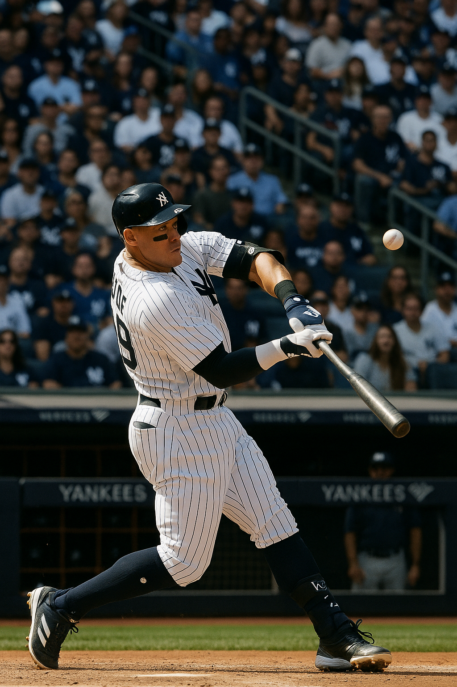
Today's MLB Pick of the Day highlights the Yankees taking the Moneyline at -201 over the Oakland A's on June 27. Clarke Schmidt toes the rubber for New York, and this matchup stacks up in the Yankees' favor.
Schmidt is having a breakout 2025 season with a 2.84 ERA and 65 strikeouts over 69.2 innings. He's been dominant at Yankee Stadium, posting a 2.30 ERA and 33 punchouts in 43 home innings. In his last start on June 21, he struck out five over seven no-hit innings and extended his scoreless streak to a whopping 25.1 innings.
On the other side, Oakland turns to Mitch Spencer, who has a 3.84 ERA, 50 strikeouts, and a 1.30 WHIP through 58.2 innings. He's been solid but lacks the consistency to shut down a potent Yankees offense on their home turf.
The Yankees are firing on all cylinders. In a June 11 win over Kansas City, Schmidt earned the win, Judge hit his 25th home run of the year, and New York clinched the series with a 6–3 victory. Schmidt went six shutout innings with seven strikeouts.
New York's lineup is crushing right-handers, and with Schmidt at the helm, they're poised to dominate the A's starter. If Schmidt holds serve, this one swings firmly in the Yankees' favor.
Final pick: Yankees Moneyline -201
• Mariners vs Twins Prediction 6/26: First 5 Innings Value
Posted: 1:07 PM – June 26, 2025
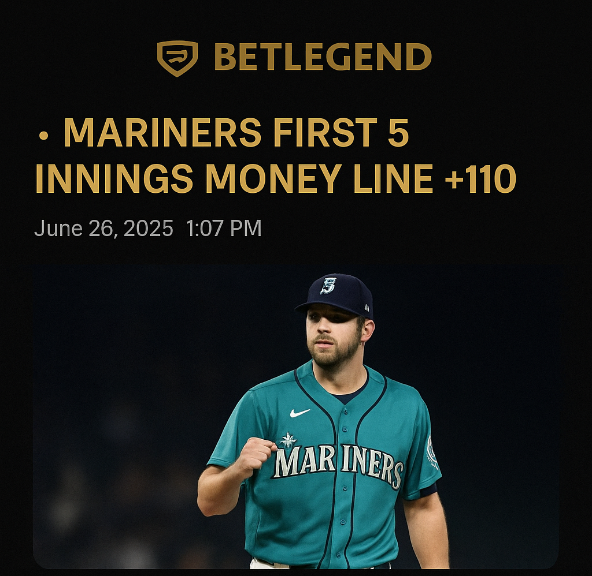
Emerson Hancock gets the start for Seattle today and while his season stats might not jump off the page, there is more to his game than the ERA suggests. He's kept opponents to three earned runs or fewer in ten of his thirteen starts and when he's ahead in the count, he tends to pitch with confidence. His last outing showed that kind of rhythm. Seven innings, only two hits allowed, one walk, and four strikeouts. He looked calm and efficient. That is exactly the type of start you want when betting on a first five money line.
The matchup also works in Seattle's favor. Simeon Woods Richardson is on the hill for the Twins and he has not been fooling many hitters lately. His ERA is north of five and his WHIP has crept up with each start. More importantly, he has failed to clear his strikeout prop in six consecutive appearances. That tells you hitters are seeing him well and making a lot of contact. When teams are putting the ball in play early, it opens the door for timely scoring. And that's something the Mariners can take advantage of, especially since they've already seen him once this season.
Seattle's offense is nothing flashy, but they have been scrappy in the early innings. They've posted runs in the first three innings in four of their last six games and are getting more competitive at-bats from guys like Cal Raleigh and Josh Rojas. This is a lineup that works counts, takes walks, and can manufacture runs even without the long ball. That kind of approach plays well against a pitcher who doesn't miss bats and tends to fall behind.
Another small edge worth noting is the bullpen behind Hancock. While the Mariners pen has struggled late in games, their starters have gone deeper recently which has reduced the early call to relievers. Betting the full game money line introduces some risk with that pen. That's why isolating the first five innings makes more sense here. Hancock gives you a better chance to come out ahead before any bullpen chaos starts up.
At plus money, this is a value play based on recent form, matchup history, and early inning trends. Hancock is not overpowering, but he knows how to compete. And that can be enough against a contact-heavy Twins lineup that has cooled off lately. Seattle has the edge early in this one and the first five money line offers the cleanest path to capitalize on it.
• Tigers vs A's Over 8.5 Prediction for June 26, 2025
Posted: 01:00 AM – June 26, 2025
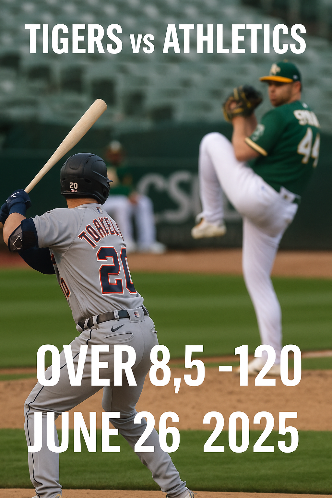
We are going to the Coliseum for what looks like a very playable over between the Tigers and the A's. The line is set at 8.5 with a price of -120. We believe this number is a little light given recent trends and current pitching matchups.
Detroit has gone over the total in nine of their last ten games. Their offense has picked up significantly, showing consistent run production from both the top and bottom of the lineup. The Tigers are now 44 and 33 to the over for the season, which places them among the league's most reliable over teams.
Oakland enters with a 41 and 35 record on the over. That success is largely due to a pitching staff that continues to struggle. The Athletics are allowing nearly six runs per game, and their bullpen remains one of the least effective in Major League Baseball. They often allow games to spiral out of control in the late innings.
Springs takes the mound for Oakland. He has not been able to find consistency, and his metrics show an inflated ERA with concerning peripherals. His walk rate is high, and he is giving up hard contact at a dangerous clip. Detroit should have multiple opportunities to score early.
The Tigers will start N, who has been up and down this season. His strikeout rate is modest and he tends to leave pitches in the zone. Against even an average Oakland lineup, that can lead to trouble. Detroit's bullpen is also vulnerable and has not held many leads cleanly, which could help push this game over the number late.
Given the poor state of both pitching staffs and the fact that both teams have been trending over all season, we are targeting this total. Warm West Coast weather and late-game scoring upside make this an attractive play.
Tigers and A's Over 8.5 -120 is the pick for June 26, 2025.
• Phillies vs Astros Pick 6/24: First 5 Innings Under Bet
Posted: 11:14 AM June 24, 2025
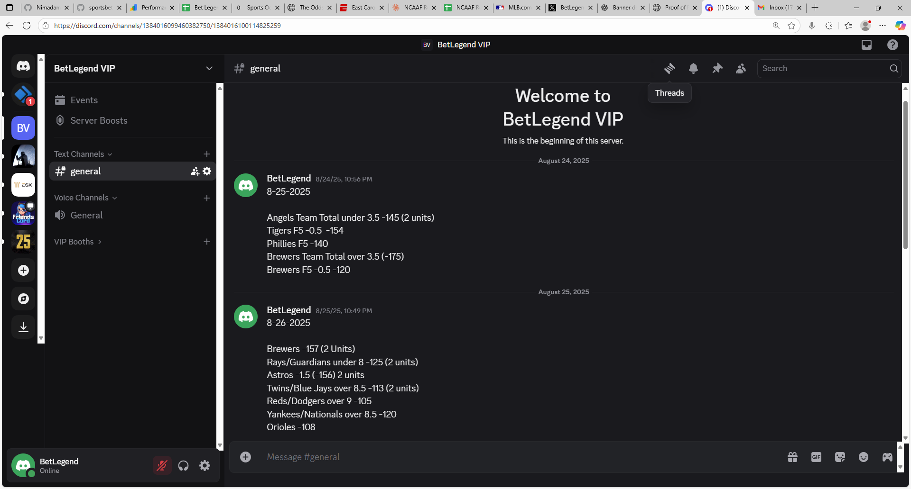
We're looking at a sneaky sharp spot on Tuesday as two of the best left-handers in baseball square off. Framber Valdez takes the mound for Houston with a 3.53 ERA and a groundball rate near 56%, one of the best in the majors. His sinker-cutter combo neutralizes power bats and keeps the ball in the park, especially early when he's fresh.
Across from him, Ranger Suarez has been flat-out elite this season. He enters with a 1.36 ERA, a WHIP under 1.00, and has allowed just one earned run in the first five innings of his last six starts combined. His command has been razor-sharp, and opponents are slugging under .290 against him this year. The Phillies have also cashed the first five under in five of Suarez's last seven outings.
Neither team has been explosive early against lefties lately. Houston is hitting just .216 with a .613 OPS in the first five innings against southpaws this month, while Philly ranks 21st in first five scoring and has a tendency to start slow on the road. Both offenses lean right-handed, but that plays right into each starter's strength.
Minute Maid Park is also a slight pitcher's park when the roof is closed, and with no wind factor or elevation boost, this feels like a tight, efficient duel between two pitchers who work quickly and generate soft contact.
We don't need a scoreless game. Just five innings with three or fewer total runs. And with the way these two are throwing, that's very live at plus money.
The pick is Phillies and Astros First 5 Innings Under 3.5 (+105)
Suarez's underlying metrics tell the same story the surface stats do. He owns a 2.75 xERA and has allowed just a 27.2% hard-hit rate which is one of the lowest in the league. His changeup has become a true weapon, inducing a 39% whiff rate, and he's now getting swings and misses from both lefties and righties. He's also remarkably consistent. Suarez hasn't allowed more than 2 runs in a start since May 7, a span of seven straight outings.
Framber Valdez, meanwhile, has shown signs of returning to form. He just held the White Sox to one run through seven innings and has gone at least six innings in five of his last six starts. His cutter usage is back up, and when he throws it more than 20% of the time, opponents are hitting just .182 off him. He still generates ground balls at an elite clip and limits barrels, giving him a very safe profile in first five under spots.
Looking at umpire data, Ryan Blakney is scheduled behind the plate and he leans slightly under. Games he's called have gone under in 55% of starts over the last two seasons. His zone is pitcher-friendly, especially to low and inside cutters and changeups, the exact mix these lefties feature.
Neither team has a strong history the first time through the order in these matchups. Houston's top bats like Jose Altuve and Jeremy Peña have a combined .212 average against lefties in June. Bryce Harper and Kyle Schwarber, while dangerous, actually have below-average OPS figures against lefties in 2025, and both struggle to barrel up sinkers and cutters.
This feels like one of those games where both pitchers cruise through the first three or four innings, maybe allowing a scattered hit or two, but no big rallies. Neither lineup has been great at capitalizing early, and both managers will likely be fine letting their aces pitch deep. Expect a quiet first five frames and a very live under at plus money.
• Yankees vs Reds Moneyline Pick for June 24, 2025
Posted: 2:20 AM June 24, 2025
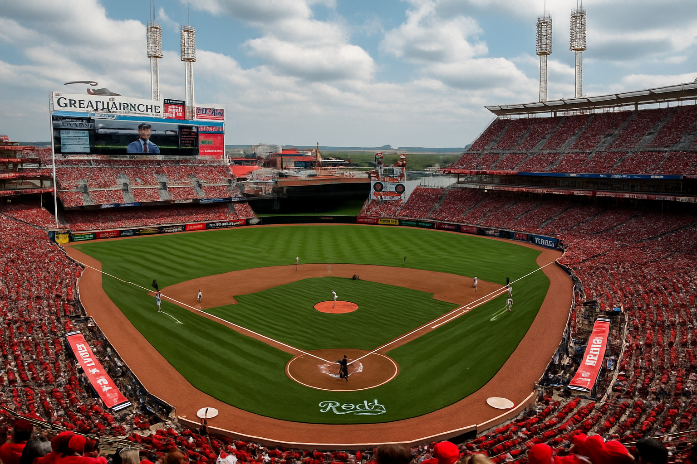
Carlos Rodon has quietly put together a stretch of strong outings for New York, and he'll take the mound Tuesday night against a Reds team that ranks bottom 5 in OPS against left-handed pitching. The Yankees, meanwhile, have one of the best road records in baseball and have been especially consistent at putting up early runs against subpar right-handers.
Nick Martinez is expected to get the start for Cincinnati, and while he's done some decent work in long relief, his track record as a starter is rocky. He's allowing a .294 average to left-handed batters, and that's bad news against a Yankees lineup that includes Anthony Rizzo, Juan Soto, and a red-hot Giancarlo Stanton.
The Yankees have won 11 of 14 when Rodon starts as a road favorite, and they've covered the run line in 9 of those. Martinez has an xERA over 5.00 in games where he's pitched more than three innings, and Cincinnati's bullpen has the second-worst WHIP in the NL over the last 30 days.
New York is simply in another class, and with their power bats in a hitter-friendly ballpark, they have the edge in every category Tuesday.
Final pick: Yankees -153
• Angels vs Red Sox Moneyline Pick for June 23, 2025
Posted: 6:08 PM June 23, 2025
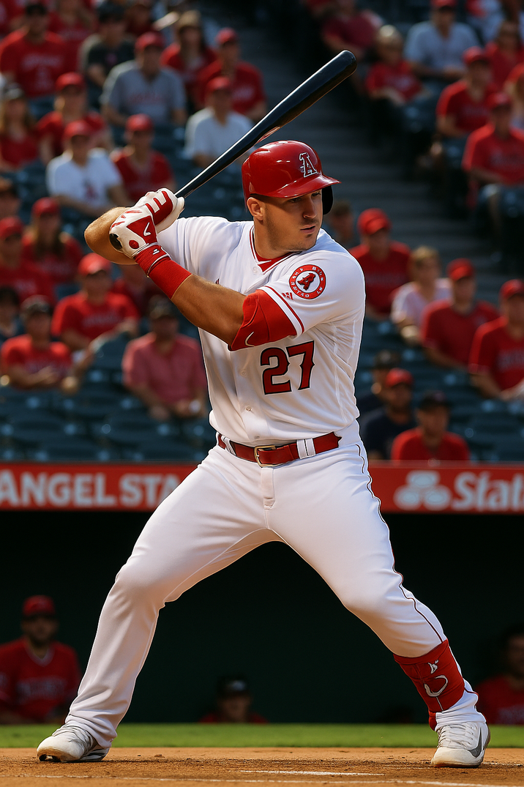
We are rolling into June 23rd with a nice underdog play that's got some real meat on the bone. The Los Angeles Angels, sitting at even money, are hosting the Boston Red Sox tonight, and we're grabbing the home side at plus 100.
Let's start with the pitching matchup. Boston is sending Walker Buehler to the mound, which will draw some name value and attention. But this is not the same Buehler we remember from his Dodgers prime. He's still working his way back after surgery, and his recent outings have been shaky. Over his last three starts, he's given up a combined 11 earned runs in just 14 innings. The velocity is down a tick, and his fastball is getting hit hard, especially by lefties.
On the flip side, the Angels are countering with Jack Kochanowicz. He's not a household name, but he's flashed legit stuff in his last few starts. The 6'6" righty has a heavy sinker and a surprisingly effective changeup, and Boston has struggled this year against unfamiliar arms. Don't underestimate a young pitcher with nothing to lose and decent command. He just went six strong innings against Houston, walking none and striking out seven.
The Angels' bullpen quietly ranks top 10 in ERA since June 1st. Their relievers have actually been better than Boston's, who still can't find a reliable bridge to Kenley Jansen. Combine that with home-field advantage and a fully healthy Angels lineup featuring Taylor Ward, Logan O'Hoppe, and a hot Mickey Moniak, and you've got a very live underdog spot.
Boston has lost five of their last six road games. They've also hit just .211 as a team over the last week. Their offense tends to vanish outside of Fenway, and this feels like one of those sleepy Monday night spots where they don't bring the energy.
The market has this as a coin flip. We think the Angels should be small favorites. When you get plus money on a motivated home team with a bullpen edge and a live young starter, that's a bet we make every time.
The pick is Angels Moneyline +100
• Braves vs Mets Pick 6/23: First 5 Innings Moneyline
Posted: 11:01 AM June 23, 2025
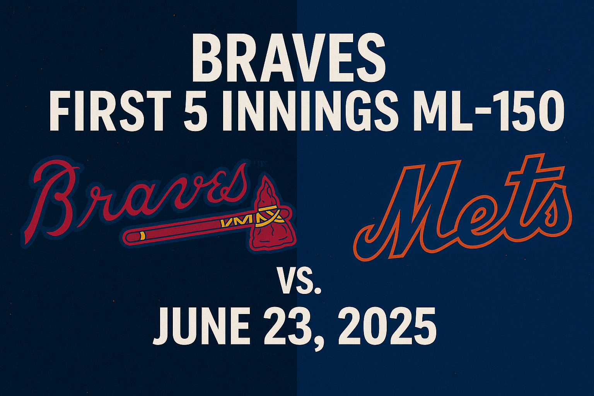
We're heading straight to the early innings tonight in New York where the Braves take on the Mets in the opener of this series. Atlanta has the better pitcher, the hotter lineup, and all the first five momentum we look for in a sharp MLB spot.
Spencer Schwellenbach has earned our trust with a 3.26 ERA and 92 strikeouts this season. He works efficiently and has shown great command early in games. In his last five starts, he's held opposing offenses scoreless through the first three innings four times. He also keeps the ball in the park and limits walks — exactly what you want backing a first five bet.
On the other side, Paul Blackburn is just trying to survive. The right-hander has a 6.92 ERA and has yet to find any rhythm this year. His control has been shaky, his hard-hit rate is near the top of the league, and he's had little success keeping Atlanta's big bats quiet. Albies is 3-for-4 off him. Riley is 2-for-3. Murphy is 1-for-1. Verdugo and Acuña have both tagged him in the past.
The Braves rank top three in MLB in first five scoring and are 7–2 in first five moneyline bets over their last nine road games. The Mets, meanwhile, have been ice-cold out of the gate, posting a .204 average and just six total first-inning runs across their last ten games. You don't want to be waiting around on this Mets offense to warm up because it often doesn't.
Rather than leave this in the hands of bullpens, we're keeping it simple. Atlanta has the better starter, the more dangerous lineup, and the favorable matchups across the board. Just get us through five innings with the lead. That's all we need.
Today's pick: Braves First 5 Innings Moneyline -150
• Dodgers vs Nationals Pick 6/22: Moneyline Prediction
Posted: 12:16 PM June 22, 2025
This is one of those games that just feels like it was made for betting. It is a beautiful Sunday in Los Angeles, Shohei Ohtani is on the mound, and the Dodgers are playing a Nationals team that looks like it already has one foot on the plane. If you are going to lay a price, this is the kind of spot where it actually makes sense.
Ohtani is doing Ohtani things again. He comes into today with an earned run average just under three and a strikeout per inning pace that most pitchers can only dream of. When he pitches at home, it is like flipping a switch. He gets sharper, his command tightens up, and hitters start guessing. The Dodgers have won twelve of the last fifteen games he has started and they are a ridiculous twenty six and eleven at home this season. That is not a fluke. They are built to win here.
Then you have the Nationals. Offensively, they are one of the worst teams in baseball. They cannot hit for power, they struggle to string together rallies, and they rank near the bottom in just about every important stat. In the month of June, they are hitting under .230 as a team and scoring just over three runs per game. Their approach looks flat, and it is not getting better.
Mike Soroka is getting the start for Washington, and honestly, it has not been pretty. His ERA is sitting around five point seven and the advanced numbers say it should be even worse. He does not miss bats, he gives up a ton of hard contact, and lefties are feasting on him. That is a big problem when the Dodgers are rolling out guys like Ohtani, Freeman, Muncy, and Outman from the left side. These guys are not just making contact, they are doing real damage against pitchers like Soroka.
The Dodgers as a team are crushing right handed pitching lately. Their average in June against righties is close to .280 and their on base percentage is near .360. They are also top two in baseball in weighted runs created against right handers which basically means they are producing runs at an elite rate every time a righty is on the mound.
It is not just the starters either. The bullpen edge is massive. The Dodgers relievers have been lights out over the last month, ranking top three in earned run average and first in WHIP. Meanwhile, Washington's bullpen has been leaking runs all over the place. If this game is close late, Los Angeles has a huge advantage once the starters come out.
Even on defense, it is not a fair fight. The Dodgers lead the league in defensive runs saved and fielding percentage. That stuff matters. They turn more grounders into outs and they make fewer mistakes when the pressure is on. Washington is closer to the bottom in both of those areas and they have made some brutal errors lately that have cost them games.
According to our model, the fair line on this game is Los Angeles - two seventy eight. We are getting - two twenty. That is a five percent edge and it qualifies as a full one unit play. The volatility is low because the Dodgers do not walk guys, they do not kick the ball around, and their bullpen throws strikes. That makes this a safe profile for a moneyline anchor.
So what do we have here? The better starter, the hotter lineup, the better bullpen, the sharper defense, and a team that just wins at home. The price might look steep, but it is actually short when you factor in all the edges. This is what a real favorite looks like. And it is worth every penny.
The pick: Dodgers -220
• Giants vs Red Sox Moneyline Pick for June 22, 2025
Posted: 9:00–11:00 PM June 21, 2025
Date/Time: Sunday, June 22, 2025 | 4:05 p.m. PT at Oracle Park Probable Starters:
• San Francisco Giants: LHP Robbie Ray (8–2, 2.68 ERA, 97 K over 87.1 IP)
• Boston Red Sox: RHP Lucas Giolito (3–1, 4.73 ERA, 41 K in 45.2 IP)
Line Status: Giants ML –150
Why Giants ML –150 Is a Smart Bet:
1. Robbie Ray has been dealing. His 2.68 ERA and 1.12 WHIP are backed by a 30.8% strikeout rate and just a 6.1% walk rate. The lefty is limiting hard contact (32.1% HC%) and has a 15.3% swinging strike rate—top 10 among qualified starters.
2. Giolito hasn't been sharp. A 4.73 ERA is paired with a troubling 1.6 HR/9 and a barrel rate north of 10%. His xERA (5.01) and FIP (4.95) suggest he's actually been fortunate. That's not the kind of arm you want backing on the road in Oracle.
3. The Giants have been mashing right-handers lately. Since June 1st, they rank 5th in MLB in wRC+ vs RHP (119), with a team OPS over .770 in that span. They're averaging 5.2 runs per game over their last 12 and have six hitters with an OPS above .750 in June.
4. Oracle Park advantage is real. The Giants are 24–14 at home this year and 14–5 over their last 19 games at Oracle. San Francisco is also 12–3 in Robbie Ray's starts and 9–1 in his last 10 appearances overall.
5. The BetLegend model gives San Francisco a 63.7% win probability in this matchup—suggesting value even at -150. We project a strong edge in starting pitching, bullpen leverage, and overall form.
Quick Trends & Stats:
Giants: 5th in MLB in wRC+ vs RHP since June 1 (119)
Giants: 14–5 last 19 home games
Giants: 12–3 in Robbie Ray starts
Red Sox: 18–21 road record
Red Sox: Team xFIP over 4.50 in last 10 games
The Giants are the better team—plain and simple. They're hitting, they're at home, and they've got one of their top arms on the mound in a game that would clinch the series. Boston is hanging around .500, but on the road, in a pitcher's park, with a volatile arm like Giolito on the bump? That's not a spot we want to back them. Our model sees clear value in the number and this is a textbook home chalk setup with real firepower behind it.
Final pick: San Francisco Giants Moneyline –150
• Astros vs Angels Pick 6/21: First 5 Innings Under
Posted: June 21, 2025 1:24 PM PT
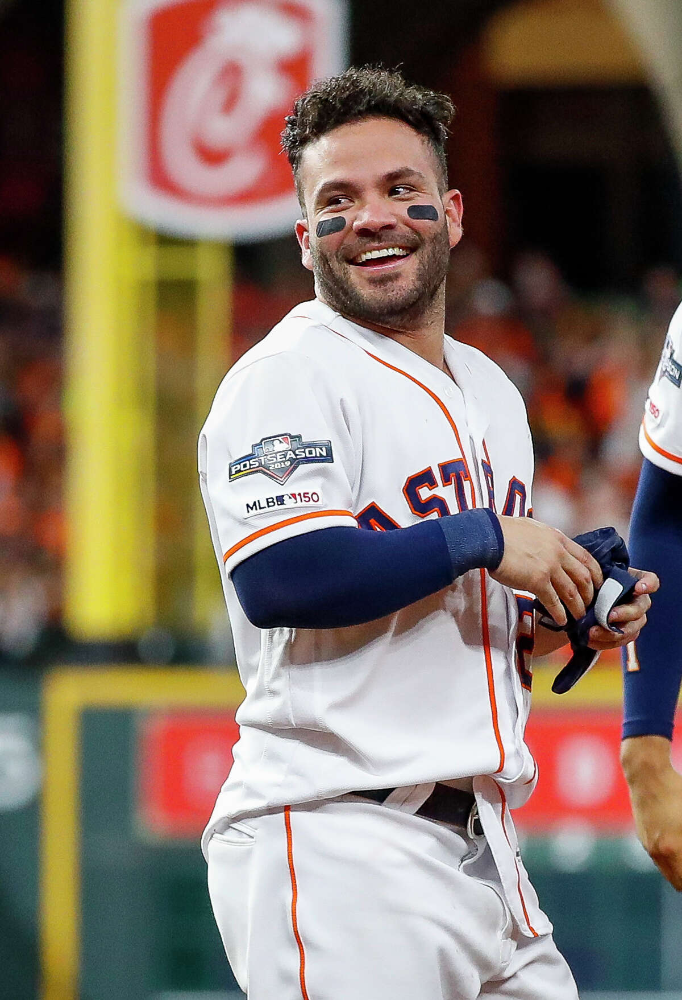
With two capable arms, sluggish offenses, and a pitcher-friendly setup in Anaheim, this sets up well for a low-scoring first half.
Wind is expected to be blowing in from center at 8+ mph, and the umpire scheduled is Lance Barrett, who historically trends under (54% under rate over the last 3 seasons).
The Astros bats remain cold overall. Over their last 10 games, they're averaging just 3.3 runs per game. The Angels' lineup hasn't been much better, still adjusting without Mike Trout, and they've scored 2 runs or fewer in 5 of their last 7 games.
No need to overthink this one. Both pitchers are hittable, but bullpens are bottom of the barrel, so this bet leans on arms starting fresh with the wind blowing in early.
Final pick: Astros/Angels First 5 Innings Under 4 (+100)
MLB Free Pick: Diamondbacks @ Rockies Over 12 June 21, 2025
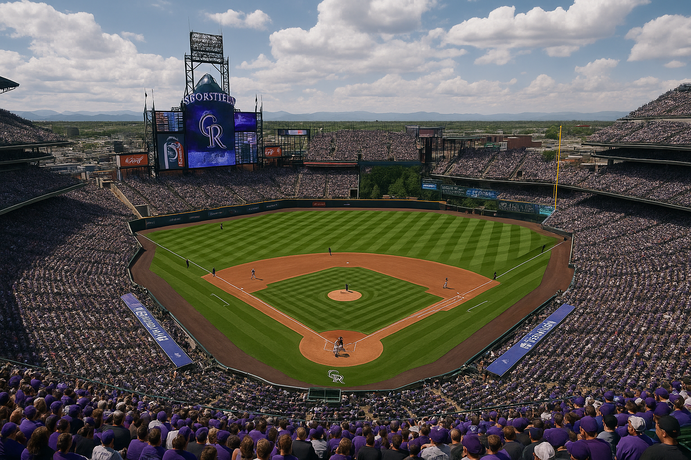
Posted: June 20, 2025 7:14 PM PT
Another night at Coors, another ridiculous total. But if there’s ever a game that screams “take the over,” this is it.
Coors Field is still the king of high-scoring baseball. Last season, Rockies home games averaged 12.5 runs—easily tops in the league—and this year’s trend looks just as wild. Arizona rolls in having gone over the total in 7 of their last 10 overall and 7 of their last 10 on the road. They’re scoring over 5 runs per game away from home this month. This team’s offense has been consistent and legit on the road.
Merrill Kelly (6-3, 3.41 ERA) takes the ball for the Diamondbacks, but his numbers dip outside of Chase Field—he’s not a shutdown ace in Denver. On the other side, the Rockies are starting rookie Carson Palmquist (0-4, 7.76 ERA), and he’s coming off a stretch of three starts where he’s allowed 11 runs in just over 14 innings. Colorado’s bullpen? Still a disaster, with an ERA over 6 and basically no relief in sight.
When these two played in Denver earlier this year, every game was a slugfest: 13-8, 9-7, and 11-6. All overs. And Saturday’s weather in Denver is supposed to be perfect for offense—86 degrees and a slight breeze out to right.
No need to overthink this one. Both pitchers are hittable, both bullpens are bottom of the barrel, and both offenses have been putting up crooked numbers. I’m riding the over at Coors until proven otherwise.
Final pick: Diamondbacks/Rockies Over 12 (-110)
MLB Pick of the Day: Giants -120 vs Red Sox June 20, 2025
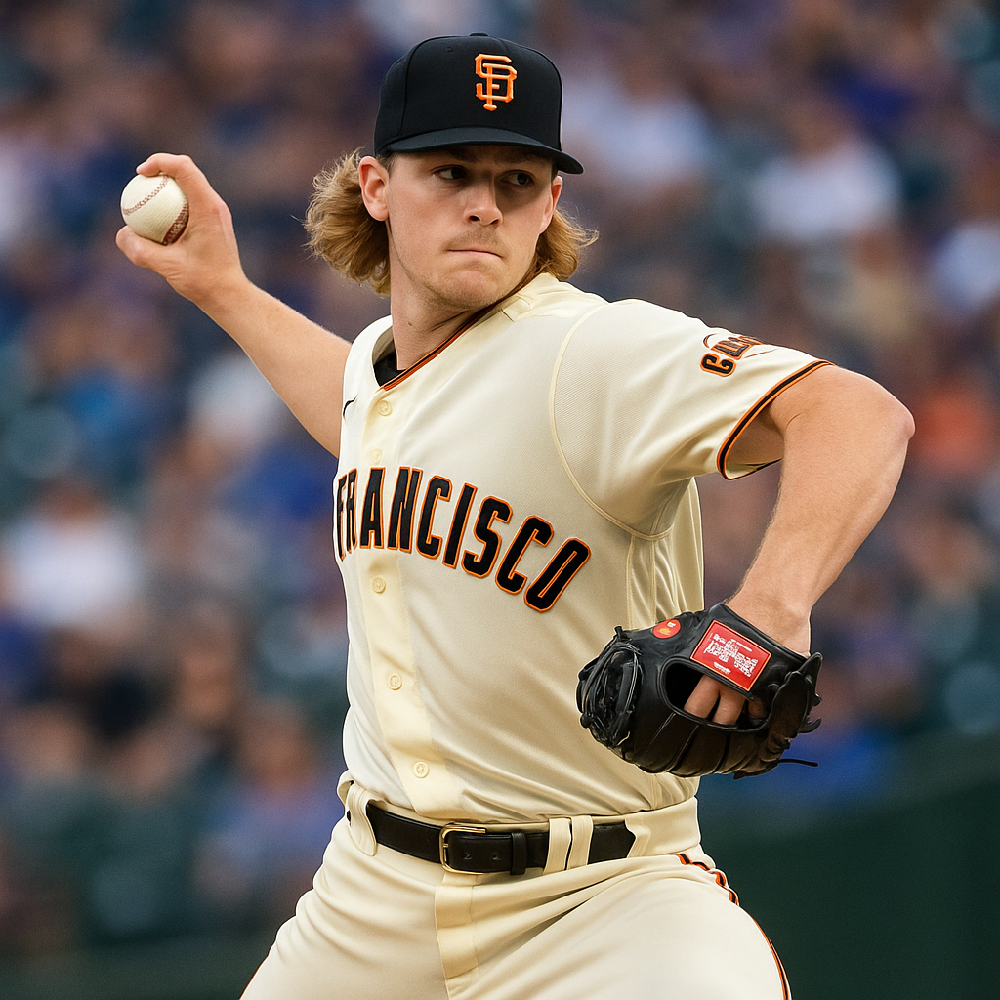
Posted: June 20, 2025 3:08 PM PT
So the model is backing the Giants -120 tonight at home against the Red Sox with Birdsong, one of the Giants' up-and-coming young arms, going against Dobbins. Birdsong has been very impressive, and the Giants just acquired Rafael Devers from the Red Sox, are at home as they continue their charge towards a possible National League West title.
The Giants have actually looked pretty damn good at Oracle Park lately, and the atmosphere feels different this season. You can just see the confidence when they're at home—there's some swagger, finally.
The Devers angle is interesting too. He's facing his old club for the first time in a Giants uniform, and you know how those "revenge" spots seem to wake up the dugout. If you've watched the Giants recently, the bats are getting it done, and even the bottom of the lineup is coming through. The Red Sox, meanwhile, just can't get any momentum going away from Fenway. Not saying I'm some genius for taking the Giants here—just pointing out the model actually lines up with what you see with your own eyes.
As for the numbers: The Giants are 23–13 at home this year, while Boston is just 17–20 away from Fenway. San Francisco’s bullpen has quietly posted a 3.58 ERA in June, compared to the Red Sox hovering near 4.50. Birdsong’s got swing-and-miss stuff and doesn’t give up a lot of barrels, and you can tell the team’s got confidence with him on the mound.
All of that is basically what the model is seeing. Sometimes the computer spits out a play and you want to poke holes in it—this isn’t one of those times. I’ll ride with the numbers, the home edge, and the revenge angle. Let’s cash it.
Final pick: Giants -120
MLB Free Pick: Tigers vs Rays First 5 Innings Under 4.5 June 20, 2025
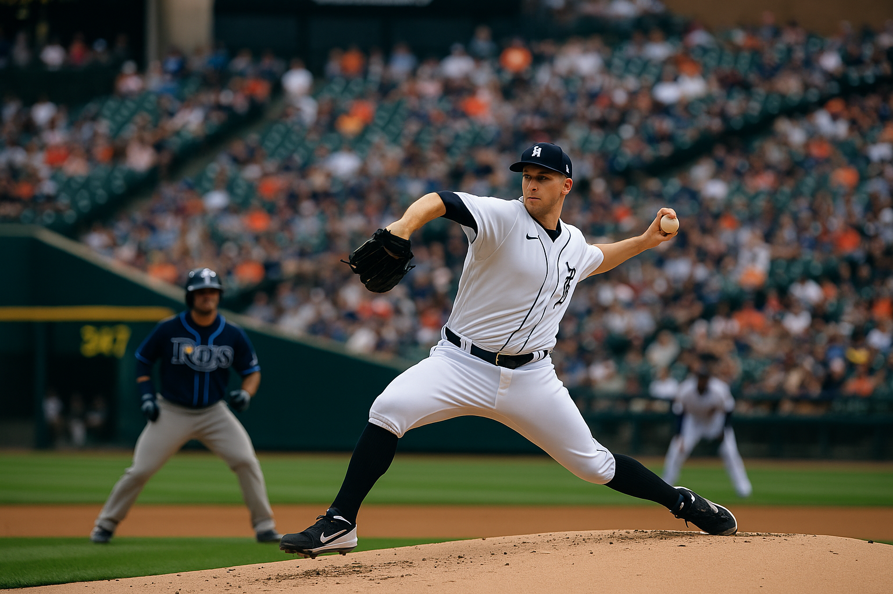
Posted: June 20, 2025 08:15 PM PT
Let’s head to Tropicana Field where the Tigers and Rays are set to open a series under the dome. Detroit sends Jack Flaherty to the mound, who’s quietly put together a solid bounce-back campaign with a 3.12 ERA and an excellent 10.6 K/9. He’s allowed just one earned run in each of his last three starts, and the fastball-slider combo is finally back to what it looked like in 2019.
On the other side, Shane Baz toes the rubber for Tampa in just his third start back from injury. While he's still stretching out, the stuff is electric — a 98-mph heater and sharp two-plane slider have helped him notch 11 strikeouts in just 8 innings pitched. More importantly, Baz has yet to allow a single run this year.
Offensively, both teams have been ice cold early. Detroit ranks dead last in first five innings scoring over the past two weeks, while Tampa Bay isn’t faring much better, sitting 25th in wRC+ through the first half of games. Neither team sees lefties tonight, so no platoon boosts.
Given Flaherty’s recent dominance, Baz’s upside, and two sluggish lineups in a low-variance dome, this sets up well for a slow start. We expect a pitching duel early and minimal scoring chances until the bullpens take over in the sixth.
Final pick: Tigers/Rays First 5 Innings Under 4.5 (-125)
MLB Free Pick: Braves vs Mets First 5 Innings Under 4.5 (-115) — June 19, 2025
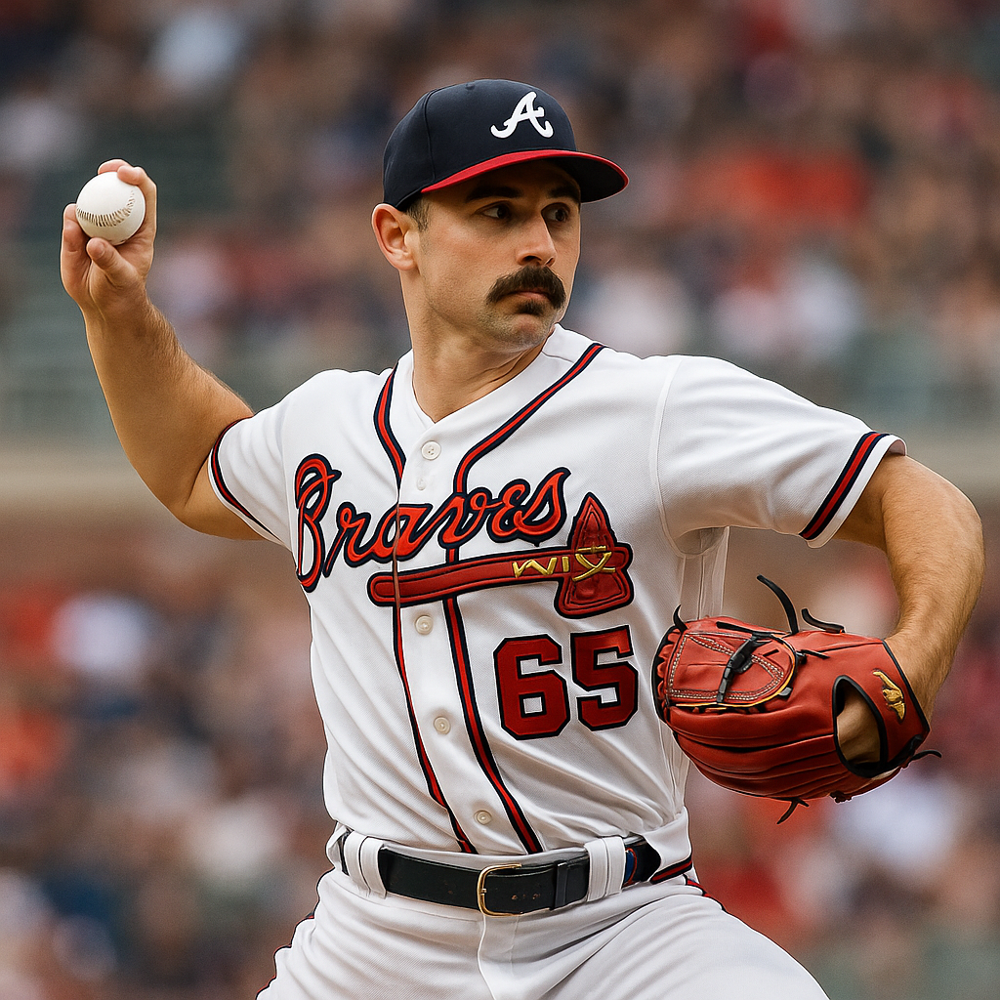
Posted: 12:15 PM June 19, 2025
The matchup features Braves starter Spencer Strider against Mets' Clay Holmes, both elite pitchers known for limiting early-inning runs. Strider has posted a 2.85 ERA over his last seven starts, maintaining excellent control and inducing a high rate of strikeouts.
Clay Holmes has been equally impressive, with a 2.95 ERA in his recent appearances and a strong ability to suppress the opposing lineup through five innings. Both bullpens have been reliable early on, reducing the likelihood of late-inning scoring.
Considering the quality of both starters and recent trends, betting the under 4.5 runs in the first five innings at -115 provides solid value.
MLB Pick of the Day: Giants ML (-158) vs Cleveland Guardians — June 19, 2025
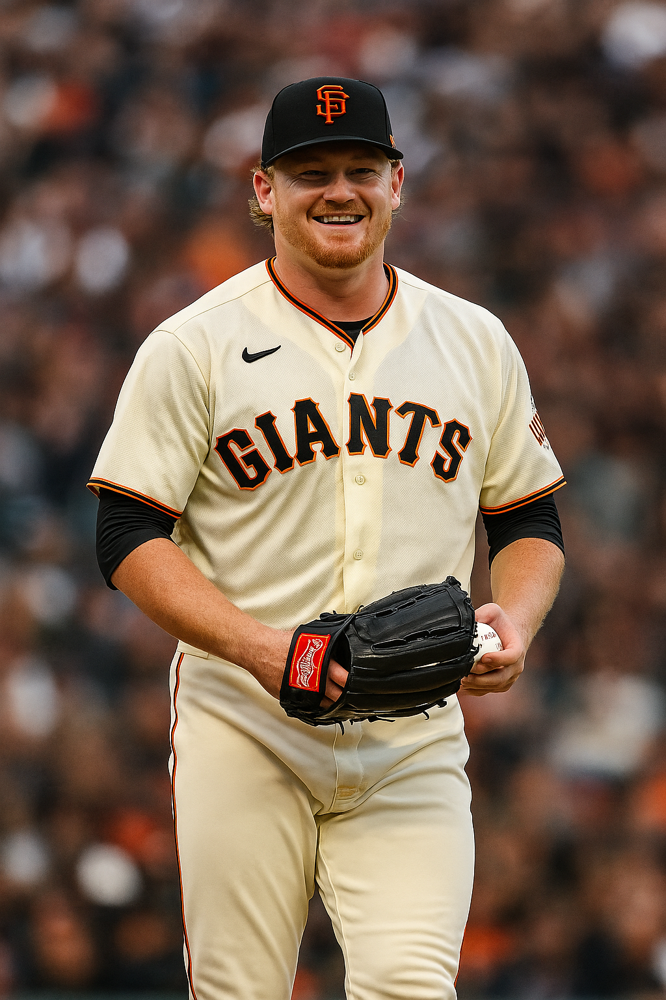
Posted: 12:15 PM June 19, 2025
The Giants host the Guardians with Logan Webb on the mound. Webb has been solid recently, pitching to a 3.25 ERA over his last six starts with a strong strikeout-to-walk ratio and a groundball rate near 50%. His command helps keep runners off base.
Cleveland’s offense is middle-of-the-pack overall but has struggled against pitchers with Webb’s profile—good control and consistent strikeout ability. The Giants bullpen has been reliable lately, posting a sub-3.50 ERA over the past month, providing solid late-game support.
Taking the Giants moneyline at -158 offers value here given Webb’s consistent performance and home-field advantage.
MLB Pick of the Day: Blue Jays -110 vs D-Backs June 18, 2025
Posted: 12:32 PM June 18, 2025
Tonight’s interleague matchup in Toronto brings together two .500-caliber teams trending in opposite directions. The Blue Jays (39–33) host the Diamondbacks (36–36) at Rogers Centre, and with struggling left-hander Eduardo Rodriguez on the mound for Arizona, Toronto offers clear value at just -110.
Rodriguez enters with a 6.27 ERA and 1.46 WHIP across 56 innings, allowing opponents to hit .281 with a .515 slugging percentage from the right side — a major red flag against a Jays lineup anchored by Vladimir Guerrero Jr., George Springer, and Bo Bichette. Right-handed bats are slashing .296/.367/.515 against him this season, and Rodriguez has failed to complete six innings in four straight outings.
Toronto sends out Eric Lauer, who brings a 2.37 ERA into the start with a strong .163 opponent average against lefties. While Lauer doesn’t pitch deep into games, he’s been reliable through the first two turns of the order, giving the Jays a shot to take control early. Arizona ranks just 23rd in OPS against left-handed pitching (.681) and has hit only eight homers off southpaws in their last 30 games.
Momentum also favors the home side. Toronto has won six of its last eight at Rogers Centre and ranks eighth in MLB in team OPS (.759) over the last two weeks. Vladimir Guerrero Jr. is batting .328 in June with a 1.022 OPS and has been consistently driving the middle of the order.
From a bullpen perspective, the Blue Jays hold a significant edge. Since June 1, their relievers have posted a 2.98 ERA — sixth-best in MLB — while the D-Backs bullpen has struggled with a 4.54 ERA over the same stretch. With Lauer typically handing things over in the 5th or 6th, this late-inning gap matters.
With the pitching matchup, bullpen advantage, right-handed firepower, and home field edge all pointing north, we see the Blue Jays as a strong value pick at nearly even money.